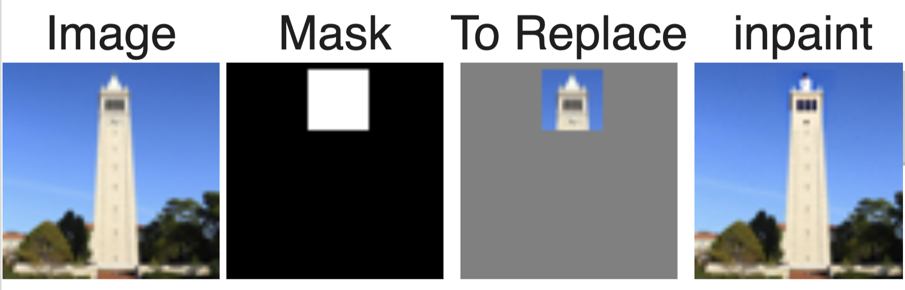

Part A
1.1 Implementing the Forward Process
In this part I Implemented Forward Process by adding noise level [250,
500, 750] to the image. I get the alphas_cumprod variable, from the
pretrained DeepFloyd denoisers and The
torch.randn_like function is used for computing
ε

1.2 Denoise using guassian blur
I apply guassian blur on noise level [250, 500, 750] kernel_size=5,
sigma=2, using torchvision.transforms.functional.gaussian_blur
1.3 One-Step Denoising
In this task, I employed a pretrained diffusion model's UNet
(stage_1.unet) to denoise three images corrupted with varying levels of
Gaussian noise (timesteps t = 250, 500, 750). Utilizing the provided
text prompt embedding for "a high quality photo," I passed each noisy
image, along with its corresponding timestep and prompt embedding,
through the UNet to estimate the noise present.
1.4 Iterative Denoising
I implemented an iterative denoising process as part of a diffusion
model to progressively clean a noisy image through multiple timesteps.
Starting with the noisiest image at timestep 990, I constructed a list
of decreasing timesteps with a stride of 30, ending at 0. The
iterative_denoise function was developed to iteratively apply the
denoising formula, incorporating the add_variance function to account
for randomness, gradually reducing noise in the image. The process was
visualized by displaying every fifth image during the denoising loop,
comparing the results with the one-step denoising method from earlier
work, effectively demonstrating the iterative refinement of image
quality.
1.5 Diffusion Model Sampling
I do diffusion model sampling by generating images from pure noise using
an iterative denoising process. Starting with the prompt "a high quality
photo", I generate random noise created using torch.randn, I transformed
it into coherent images by applying the iterative_denoise function with
i_start = 0.
1.6 Classifier-Free Guidance (CFG)
I implemented the iterative_denoise_cfg function, which incorporates
Classifier-Free Guidance (CFG) to improve the quality of images
generated by a diffusion model. By computing both a conditional and an
unconditional noise estimate, the model combines these with a CFG scale
( ùõæ = 7) to amplify the desired guidance while reducing randomness.
Using this method, I generated five images of "a high-quality photo,"
with the CFG scale enhancing the clarity and coherence of the output.
This process involved running the UNet model twice—once for conditional
and once for unconditional predictions—using the null prompt for
unconditional guidance. The results demonstrated significant
improvements in image quality compared to earlier methods
1.7 Image-to-image Translation
In this task, I implemented the SDEdit algorithm to perform
image-to-image translation using the iterative denoising process with
Classifier-Free Guidance (CFG). Starting with a real image, I added
controlled levels of noise and then denoised it using the
iterative_denoise_cfg function with various starting indices [1, 3, 5,
7, 10, 20]. This process allowed the diffusion model to "edit" the
image, gradually bringing it closer to the natural image manifold as
noise levels decreased. The edits showcased a range of transformations,
from highly distorted versions to images closely resembling the
original. Additionally, I experimented with two custom test images,
applying the same procedure to demonstrate the model's ability to refine
noisy inputs into coherent and high-quality outputs, highlighting its
effectiveness in creative image manipulation.
1.7.1 Editing Hand-Drawn and Web Images
I explored the process of editing nonrealistic images, such as
hand-drawn sketches and web-sourced images, to project them onto the
natural image manifold using a diffusion model. For the prompt i choose
"a photo of a hipster barista". For the deliverables, I selected one
image from the web and applied iterative denoising edits at various
noise levels [ 1 , 3 , 5 , 7 , 10 , 20 ], showcasing the transformation
of the input toward a more realistic representation. Additionally, I
created two hand-drawn images, processed them with the same method, and
demonstrated how the model refined them progressively. These experiments
highlighted the model's capability to enhance and naturalize artistic or
rough inputs into visually coherent outputs, following the steps of
noise addition and iterative denoising with Classifier-Free Guidance.
1.7.2 Inpainting
I implemented an inpainting function following the RePaint paper
methodology, which uses a binary mask to selectively modify parts of an
image while retaining the original content elsewhere. Using the
diffusion denoising process, I ensured that regions outside the mask
remained unchanged while generating new content within the masked area.
To demonstrate, I inpainted the top section of the Campanile tower using
a binary mask to specify the region for modification. Additionally, I
created and tested two custom images with their own masks, successfully
filling the masked areas with new, realistic content. This involved
reusing the forward function and iterative denoising with
Classifier-Free Guidance to ensure coherence and quality in the output,
even for regions requiring entirely new content generation.

1.7.3 Text-Conditional Image-to-image Translation
I implemented text-conditional image-to-image translation by extending
the SDEdit framework to include text prompts for guiding the image
generation process. By altering the prompt (e.g., "a rocket ship"), I
manipulated the transformation process to integrate semantic guidance
into the output, ensuring the generated images reflected both the text
prompt and the input image structure. I applied this approach at various
noise levels [ 1 , 3 , 5 , 7 , 10 , 20 ] [1,3,5,7,10,20], demonstrating
a gradual transformation where the images increasingly combined features
of the original input and the semantic details from the text prompt.
Additionally, I edited two custom test images to showcase the
versatility of this method, resulting in outputs that balanced the
original content with creative variations aligned to the prompts.
1.8 Visual Anagrams
I implemented a visual anagrams function to create optical illusions
using a diffusion model. The process involves generating an image that
transforms its appearance based on orientation. Specifically, I created
a visual anagram where the image appears as "an oil painting of people
around a campfire" in one orientation and flips to reveal "an oil
painting of an old man" when turned upside down. This was achieved by
denoising the image using two prompts—one for each description—while
flipping the image between iterations and averaging the noise estimates
to maintain coherence. Additionally, I created two more illusions with
similar reversible transformations, demonstrating the ability of the
diffusion model to blend semantic guidance with visual creativity
effectively. This task highlighted the versatility of guided diffusion
in generating dynamic, context-sensitive visual outputs.
1.9 Hybrid Images
I implemented the make_hybrids function to create hybrid images using a
diffusion model. The goal was to blend two different prompts—such as "a
skull" and "a waterfall"—by combining their low and high-frequency
components. I utilized the noise estimates from the model for both
prompts and applied low-pass filtering (using Gaussian blur) to isolate
the low-frequency components and high-pass filtering to retain
high-frequency details. These filtered components were then merged to
create a composite noise estimate, which guided the generation of the
hybrid image. The result was an image that appears as a skull from afar
but reveals a waterfall when viewed up close. Additionally, I created
two more hybrid images, experimenting with other prompt combinations to
showcase the versatility and creativity of this approach. This process
demonstrated how diffusion models can effectively generate
context-dependent visual illusions by manipulating frequency domains.
Part B
Part 1: Training a Single-Step Denoising UNet
In this part I implemented the Single-Step Unconditional UNet then I
Visualize the different noising processes σ = [0.0, 0.2, 0.4, 0.5, 0.6,
0.8, 1.0]. Then I train it on σ = 0.5 and visualize denoised results on
the test set at the end of training. Finally I Visualize the denoiser
results on test set digits with varying levels of noise
Visualize the different noising processes σ = [0.0, 0.2, 0.4, 0.5,
0.6, 0.8, 1.0]
A training loss curve plot every few iterations during the whole
training process
Sample results on the test set after the first and the 5-th epoch
Sample results on the test set after the 1 epoch

Sample results on the test set after the 5 epoch

Sample results on the test set with out-of-distribution noise levels
after the model is trained.
Part 2: Training a Diffusion Model
Adding Time Conditioning to UNet
In this task, we trained a UNet-based diffusion model for iterative
image denoising. Instead of predicting the clean image, the model was
trained to predict the noise added to the image, enabling more
effective denoising. A noise schedule was defined, gradually
increasing noise levels at each timestep, and the cumulative effects
were used to create progressively noisier images. A time-conditioned
UNet was implemented to predict and remove noise iteratively at each
step. This approach allows the generation of realistic images by
starting with pure noise and gradually denoising it. The framework was
tailored for the MNIST dataset with fewer diffusion steps (300)
compared to standard implementations, making the process efficient and
suitable for the task.
Adding Class-Conditioning to UNet
In this task, I extended the UNet architecture to include class
conditioning for generating class-specific images, such as digits 0-9.
This was achieved by introducing additional fully connected layers
(FCBlocks) to embed both time (t) and class (c) information. The
class-conditioning vector (c) was represented as a one-hot encoded vector
and incorporated into the model's processing pipeline. To ensure
flexibility, a dropout mechanism was added, where 10% of the time the
conditioning vector c was set to a zero vector, allowing the UNet to
generate images without specific class conditioning (unconditional
generation). Then I training where noisy images were progressively
denoised using the class-conditioned UNet, guided by the gradient descent
on the loss between predicted and true noise. The results showed a steady
reduction in training loss, demonstrating the model's ability to generate
class-conditioned images effectively while maintaining versatility in
unconditional image generation.